第5章 例題・演習解答例
本資料は『ソフトウェアメトリクス統計分析入門 』(以降、テキストと記載)の第4章の例題をR で解いた際の解答例を示したものです。また、R Markdown を使うメリットを示すための一手段として作成していますので、テキストにおける計算方法とは異なる部分もあります。本資料で使用しているデータの入手に関してはテキストにてご確認下さい。
本資料がHTML形式の場合、R のコードを参照するには右側にある[Code]ボタンをクリックして下さい。なお、JavaScriptは必ずOnにしてご覧下さい。
例題5.1
第1章の例題1.1と同じ状況を想定します。 図5.1に示す『ソフトウェア開発データ白書2014-2015』をベンチマークとして、あるプロジェクトのFP生産性0.09 FP/人時の金融業界における位置づけを調べてください。 例題1.1との違いは、データ白書の2014-2015版データを使う点です。そちらの版は5数要約値だけではなく、2012-2013版にはなかった生データも公開されています。 以下に「K：金融・保険業」のFP生産性の生データを掲載してあります． 出典：SECデータ白書2014-2015版のダウンロードデータ graph_data_9.xlsxの9-1-9, 10シートのデータで 業種（大分類）を「K：金融・保険業」でフィルタリングしたもの
生産性の測定を開始し、あるプロジェクトの生産性が0.09FP/人時となりました。まだデータをとり始めたばかりなので、この0.09という値の良否が判断できません。 そこで、『ソフトウェア開発データ白書』をベンチマークとして、業界内において、どの程度の位置づけとなるのかを調べることにしました。
『ソフトウェア開発データ白書2012-2013』のp.288に業種別FP生産性データが掲載されています。それを図1.1に示します。この組織の業種は、「K. 金融・保険業」に該当します。さて、このプロジェクトの生産性をどのように評価すればよいでしょうか。
出典：ソフトウェアメトリクス統計分析入門 P12
データの設定
本例題で利用するデータは予めCSVファイルとして保存されているものとします。
file <- "./data/ex_5.csv"
x <- read.csv(file, header = TRUE, sep = ",", fileEncoding = "UTF-8")
df_print(x)FP生産性の特徴
業種別FP生産性データの特徴を把握するためにヒストグラムを描き、その上にあるプロジェクトでのFP生産性0.09をプロットしてみます。
# fivenum(x[, 1], na.rm = TRUE)
summary(x)## FP生産性
## Min. :0.005223
## 1st Qu.:0.031488
## Median :0.047350
## Mean :0.056776
## 3rd Qu.:0.070381
## Max. :0.202100x %>%
ggplot(aes(x[, 1])) +
# geom_histogram(binwidth = diff(hist(x[, 1], plot = FALSE)$breaks)[1]) +
geom_histogram(breaks = pretty(x[, 1], n = nclass.Sturges(x[, 1]))) +
geom_vline(xintercept = 0.09, colour = "red") +
xlab("FP生産性")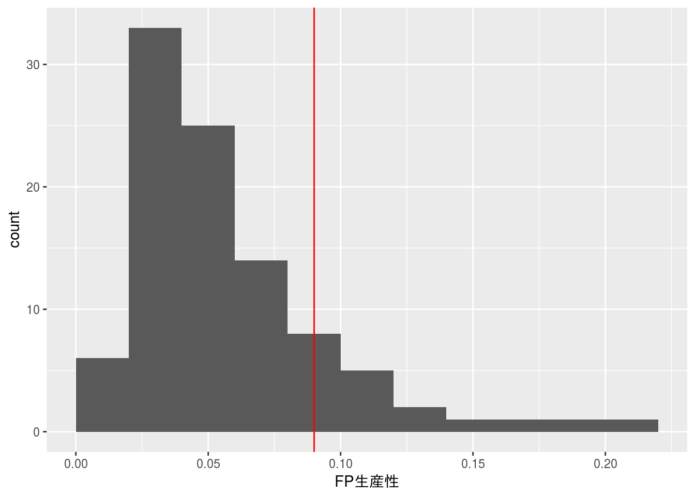
あるプロジェクトのFP生産性（0.09）は、ヒストグラムを見てもわかるように業種別FP生産性の平均値ならびに中央値よりも上側にあることが分かりますが、ヒストグラムが右に歪んだ形であるため、どの程度の位置にあるかの判断が難しいです。
そこで、業種別FP生産性のデータを対数変換してみます。
log.x <- log10(x)
log.x %>%
ggplot(aes(log.x[, 1])) +
# geom_histogram(binwidth = diff(hist(log.x[, 1], plot = FALSE)$breaks)[1]) +
geom_histogram(breaks = pretty(log.x[, 1], n = nclass.Sturges(log.x[, 1]))) +
geom_vline(xintercept = log10(0.09), colour = "red") +
xlab("FP生産性")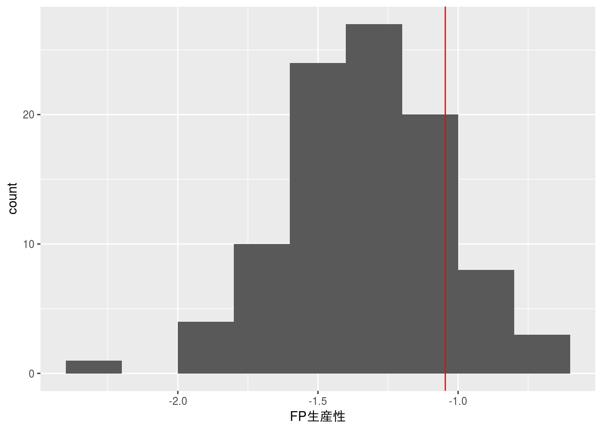
log.x %>%
ggplot(aes(sample = log.x[, 1])) +
geom_qq()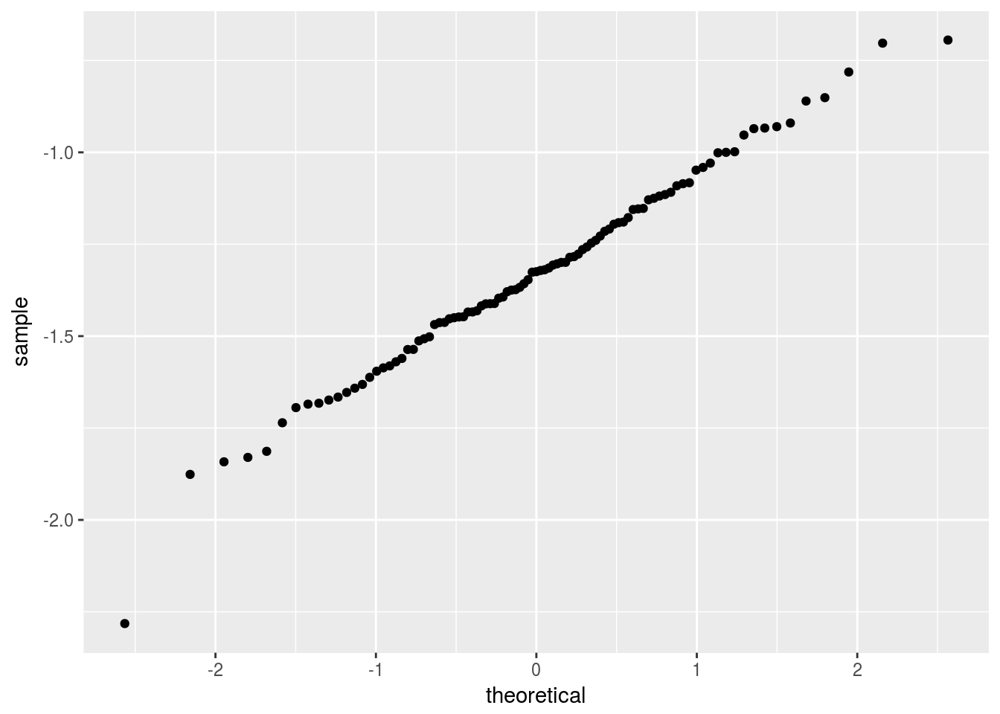
shapiro.test(log.x[, 1])##
## Shapiro-Wilk normality test
##
## data: log.x[, 1]
## W = 0.98976, p-value = 0.6657対数変換後のFP生産性データは概ね正規分布にしたがっていることから、あるプロジェクトのFP生産性（0.09）の上位確率を正規分布の確率関数から求めてみます。
pnorm(log10(0.09), mean = mean(log.x[, 1]), sd = sd(log.x[, 1]), lower.tail = FALSE)## [1] 0.1519098これよりあるプロジェクトのFP生産性（0.09）は業種別FP生産性データと比較すると上位15%程度に位置するデータであると判断できます。
演習 5.1
以下にモジュールごとのテストケース密度のデータがあります。 テストケース密度とは、対象モジュールで実施されたテストケース数を対象モジュールの行数（KLOC）で割ったものです。 これが少な過ぎる場合はテスト不足でNGと考え、下限の基準値を設定することにします。 まずは、対数変換せずに第1章の例題1.2と同様の考え方を用いて、基準を下回る割合が10％になるように基準値を設定してください。 そこでの問題点について考察し、その後に対数変換をして基準値を設定してください。
データの設定
本例題で利用するデータは予めCSVファイルとして保存されているものとします。
file <- "./data/ex5_1.csv"
x <- read.csv(file, header = TRUE, sep = ",", row.names = 1,
fileEncoding = "UTF-8")
x %>%
dplyr::select("テストケース密度" = tests) %>%
df_print(x)未変換時
# 下側10%のZスコア（基準Zスコア）
lower.10.z <- qnorm(0.1, mean = 0, sd = 1)
# 基準Zスコアから実値に逆変換して基準値を求める
lower.10.value <- (lower.10.z * sd(x[, 1])) + mean(x[, 1])
# 階級の設定
breaks <- pretty(x[, 1], n = nclass.Sturges(x[, 1]), min.n = 1)
# ヒストグラムと基準値を描く
x %>%
ggplot(aes(x[, 1])) +
geom_histogram(breaks = breaks) +
geom_vline(xintercept = lower.10.value, linetype = "dotted",
colour = "red") +
xlab("テストケース密度") + ylab("頻度")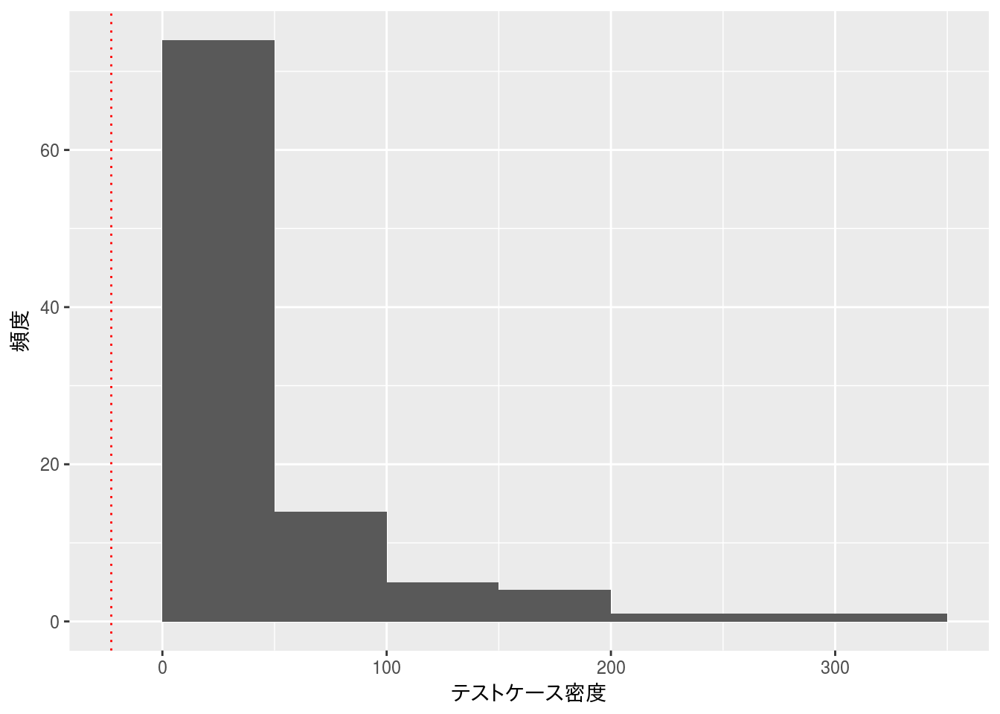
対象データをZスコア化（正規分布と見なす）し、下限10%の基準値を求めると-22.7902345（ヒストグラムの赤点線）となり、この下限値を下回るデータの個数は0であり、存在しないことが分かります。
このようにデータ分布を無視してZスコアを用いると期待された結果が得られないことが分かります。なので、データ分析の前には、データの分布等の特徴を確認することが重要になります。
対数変換時
対象データに対して第1章の手法を適用するために対数変換という手法を用いてみます。
logged.x <- log10(x)
logged.x %>%
ggplot(aes(sample = logged.x[, 1])) +
geom_qq()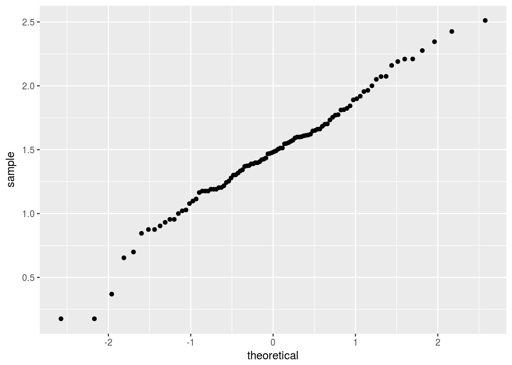
shapiro.test(logged.x[, 1])##
## Shapiro-Wilk normality test
##
## data: logged.x[, 1]
## W = 0.98313, p-value = 0.2312対数変換後のデータをQQプロットと正規性の検定で確認する限り、ほぼ、正規分布と見なせるのでZスコア化し基準値を求めてみます。
lower.10.z <- qnorm(0.1)
lower.10.value <- (lower.10.z * sd(logged.x[, 1])) + mean(logged.x[, 1])
# 階級の設定
breaks <- pretty(logged.x[, 1], n = nclass.Sturges(logged.x[, 1]), min.n = 1)
logged.x %>%
ggplot(aes(logged.x[, 1])) +
geom_histogram(breaks = breaks) +
geom_vline(xintercept = lower.10.value, linetype = "dotted",
colour = "red") +
xlab("テストケース密度（対数変換）") + ylab("頻度") +
ggtitle("テストケース密度の分布と基準値",
subtitle = paste("基準値 :", round(lower.10.value, 2)))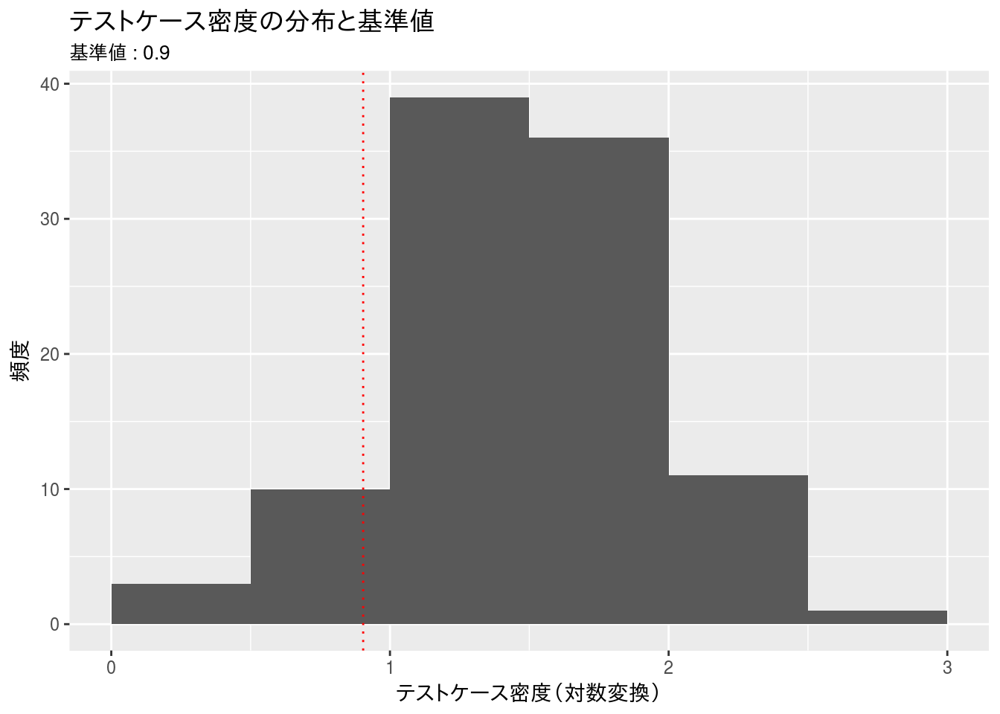
対象データを対数変換した場合のZスコア下限10%での基準値は0.9038911（ヒストグラムの赤点線）となり、この下限値を下回るデータの個数は9であり、概ね想定（10%）に近い値となっていることが分かります。この値を逆変換するとテストケース密度が8.0147703を下回るものはテスト不足と判断できます。
演習 5.2
以下にプロジェクトごとの結合テストフェーズにおけるテストケース密度とバグ密度のデータがあります。 テストケース密度はテストケース数、バグ密度はバグ件数をそれぞれ規模で割ったものです。 規模はプログラム行数としています。この2変数で散布図を作成し、ゾーン分析を行います。 ゾーン分析とは、散布図をいくつかの象限に分割して、象限ごとの所見や対応策などを検討するものです。 ここでは、単純にテストケース密度とバグ密度の平均で4つの象限に分けることにします。 まずは、対数変換せずにそれぞれの平均を求めて、散布図を4つの象限に分ける線を引いてください。 そこでの問題点について考察し、その後に対数変換をして同様に4象限に分けてください。
テストケース密度とバグ密度によるゾーン分析の方法については以下の資料を参考にしてください。 定量的品質予測のススメ P58～ http://www.ipa.go.jp/files/000005133.pdf
出典：SECデータ白書2014-2015版のダウンロードデータ graph_data_8.xlsxの8-4-17, 18シートのデータで開発プロジェクトの種別を「a：新規開発」でフィルタリングしたもの それぞれのメトリクスの詳しい定義はSECデータ白書を参照してください。
データの設定
本例題で利用するデータは予めCSVファイルとして保存されているものとします。
file <- "./data/ex5_2.csv"
x <- read.csv(file, header = TRUE, sep = ",", fileEncoding = "UTF-8")
x %>%
dplyr::select("テストケース密度" = tests, "バグ密度" = bugs) %>%
df_print(x)未変換時
mean.x <- x %>%
dplyr::summarise_each(funs(mean))## `summarise_each()` is deprecated.
## Use `summarise_all()`, `summarise_at()` or `summarise_if()` instead.
## To map `funs` over all variables, use `summarise_all()`x %>%
ggplot(aes(x = tests, y = bugs)) +
geom_point() +
geom_vline(xintercept = mean.x$tests, linetype = "dotted") +
geom_hline(yintercept = mean.x$bugs, linetype = "dotted") +
xlab("テストケース密度") + ylab("バグ密度")
散布図をプロットして平均値でゾーン分割した場合、値の小さな側に大きく偏っているため、テストまたは製品品質に問題があるプロジェクトが多いように見える。
対数変換時
そこでデータを対数変換してみる。また、ゾーン分割に標準偏差（\(\sigma\)）も用いてみる。
mean.x <- log10(x) %>%
dplyr::summarise_each(funs(mean))## `summarise_each()` is deprecated.
## Use `summarise_all()`, `summarise_at()` or `summarise_if()` instead.
## To map `funs` over all variables, use `summarise_all()`sd.x <- log10(x) %>%
dplyr::summarise_each(funs(sd))## `summarise_each()` is deprecated.
## Use `summarise_all()`, `summarise_at()` or `summarise_if()` instead.
## To map `funs` over all variables, use `summarise_all()`log10(x) %>%
ggplot(aes(x = tests, y = bugs)) +
geom_point() +
geom_vline(xintercept = mean.x$tests, linetype = "dotted", colour = "red") +
geom_hline(yintercept = mean.x$bugs, linetype = "dotted", colour = "red") +
geom_vline(xintercept = (mean.x$tests + sd.x$tests), linetype = "dotted",
colour = "blue") +
geom_hline(yintercept = (mean.x$bugs + sd.x$bugs), linetype = "dotted",
colour = "blue") +
geom_vline(xintercept = (mean.x$tests - sd.x$tests), linetype = "dotted",
colour = "blue") +
geom_hline(yintercept = (mean.x$bugs - sd.x$bugs), linetype = "dotted",
colour = "blue") +
xlab("テストケース密度(対数変換)") + ylab("バグ密度(対数変換)") +
ggtitle("テストケース密度とバグ密度の散布図（対数変換）",
subtitle = "赤：平均値／青：平均値±標準偏差")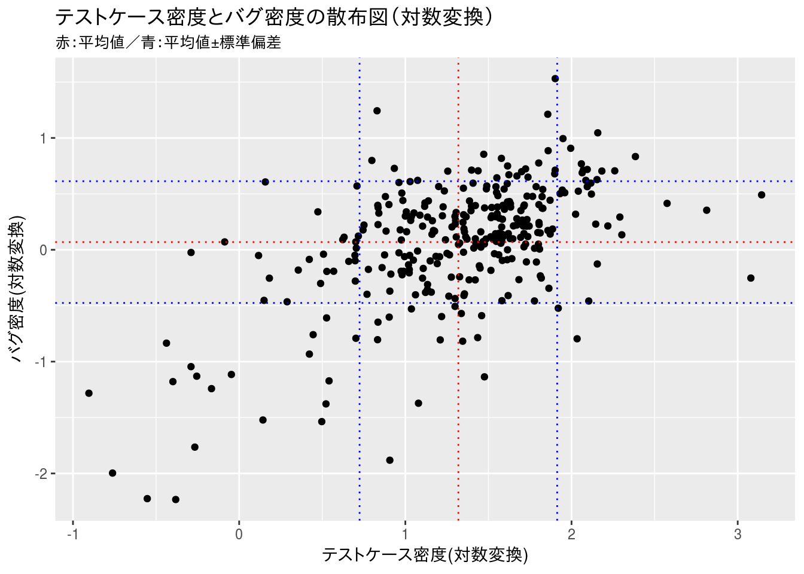
ゾーン分析
プロダクト品質の判定方法の一つとしてテスト（ケース）密度とバグ密度を用いたゾーン判定があります。詳細についてはIPAの『定量的品質予測のススメ(PDF)』 で確認してください。以下は抜粋です。
ゾーン判定を用いる場合は以下の条件が満たされていること確認してください。
- テストの網羅性が確認されていること
- 下記の実績データが蓄積・評価されていること
- 過去に実施して開発プロセスを踏襲していること
ゾーン判定では基準値（閾値）を元に下表のように9分割したゾーンを設けて判定します。
| L | M | H | |
|---|---|---|---|
| H | 8 | 5 | 6 |
| M | 7 | 1 | 2 |
| L | 9 | 3 | 4 |
横軸をテスト（ケース）密度、縦軸をバグ密度とした場合、各ゾーンにおける判断は下表のようになります。
| Zone | 判断 |
|---|---|
| 1 | 一応品質は良好、テスト結果も予想どおり |
| 2 | テスト結果がやや悪、テスト内容点検 |
| 3 | テスト内容が適切か点検 |
| 4 | テスト効率がやや悪、テスト内容点検 |
| 5 | 前工程の品質確保不足、内容点検 |
| 6 | 前工程の品質確保不足、内容点検 |
| 7 | テスト不足、前工程の品質確保不足、内容点検 |
| 8 | テスト不足、前工程の品質確保不足、内容点検 |
| 9 | テスト不足、内容点検 |
閾値の決め方
閾値は信頼度成長曲線を元にバグを出し尽くしたと判断できるゾーン（UCL/LCL）の値を閾値として用いますが、本演習では\(平均値（\mu） \pm 標準偏差（\sigma）\)を閾値として青点線で描いています。
演習 5.3
以下にプロジェクトごとの規模（LOC）、開発総工数（人時）のデータがあります。開発総工数を目的変数、規模を説明変数とした単回帰分析を行います。 まずは、対数変換せずに回帰分析を行ってください。そこでの問題点について考察し、その後に対数変換をして同様に単回帰分析を行ってください。 最終的な回帰式は対数変換をしない説明変数，目的変数を扱えるように変形してください。
出典：SECデータ白書2014-2015版のダウンロードデータ graph_data_6.xlsxの6-5-13シートのデータで 業種（大分類）を「J：卸売・小売業」でフィルタリングしたもの それぞれのメトリクスの詳しい定義はSECデータ白書を参照してください。
データの設定
本例題で利用するデータは予めCSVファイルとして保存されているものとします。
file <- "./data/ex5_3.csv"
x <- read.csv(file, header = TRUE, sep = ",", fileEncoding = "UTF-8")
x %>%
dplyr::rename('開発規模[LOC]' = loc, '開発工数[人時]' = develop) %>%
df_print(x)未変換時
lm.x <- x %>%
mutate_each(funs(./1000)) %>%
lm(develop ~ loc, data = .)## `mutate_each()` is deprecated.
## Use `mutate_all()`, `mutate_at()` or `mutate_if()` instead.
## To map `funs` over all variables, use `mutate_all()`lm.text <- paste("KMH = ", round(lm.x$coefficients[1], 2), " + ",
round(lm.x$coefficients[2], 2), "*KLOC",
" / R^2 = ", round(summary(lm.x)$r.squared, 2), sep = "")
x %>%
ggplot(aes(x = loc/1000, y = develop/1000)) +
geom_point() +
geom_smooth(method = "lm") +
xlab("開発規模[KLOC]") + ylab("開発工数[KMH]") +
ggtitle(label = "開発規模と開発総工数の関係", subtitle = lm.text)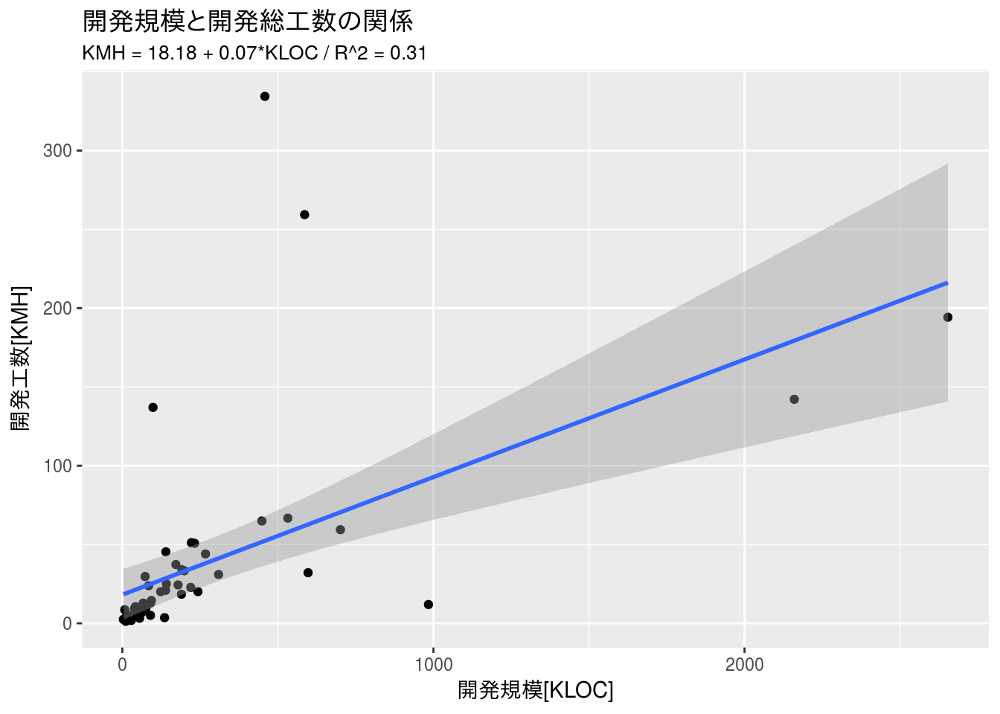
summary(lm.x)##
## Call:
## lm(formula = develop ~ loc, data = .)
##
## Residuals:
## Min 1Q Median 3Q Max
## -79.698 -16.092 -11.795 -2.175 282.025
##
## Coefficients:
## Estimate Std. Error t value Pr(>|t|)
## (Intercept) 18.17553 8.10084 2.244 0.0291 *
## loc 0.07463 0.01536 4.859 1.09e-05 ***
## ---
## Signif. codes: 0 '***' 0.001 '**' 0.01 '*' 0.05 '.' 0.1 ' ' 1
##
## Residual standard error: 53.01 on 53 degrees of freedom
## Multiple R-squared: 0.3082, Adjusted R-squared: 0.2951
## F-statistic: 23.61 on 1 and 53 DF, p-value: 1.088e-05対数変換時
lm.x <- log10(x) %>%
lm(develop ~ loc, data = .)
lm.text <- paste("Logged KMH = ", round(lm.x$coefficients[1], 2), " + ",
round(lm.x$coefficients[2], 2), "*Logged KLOC",
" / R^2 = ", round(summary(lm.x)$r.squared, 2), sep = "")
log10(x) %>%
ggplot(aes(x = loc, y = develop)) +
geom_point() +
geom_smooth(method = "lm") +
xlab("対数変換した開発規模[KLOC]") + ylab("対数変換した開発工数[KMH]") +
ggtitle(label = "対数変換した開発規模と開発総工数の関係", subtitle = lm.text)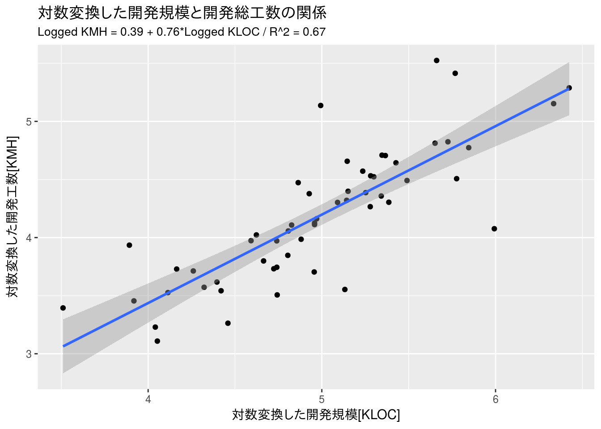
summary(lm.x)##
## Call:
## lm(formula = develop ~ loc, data = .)
##
## Residuals:
## Min 1Q Median 3Q Max
## -0.87748 -0.14375 0.00318 0.11897 0.94404
##
## Coefficients:
## Estimate Std. Error t value Pr(>|t|)
## (Intercept) 0.39136 0.36604 1.069 0.29
## loc 0.76126 0.07297 10.433 1.87e-14 ***
## ---
## Signif. codes: 0 '***' 0.001 '**' 0.01 '*' 0.05 '.' 0.1 ' ' 1
##
## Residual standard error: 0.3282 on 53 degrees of freedom
## Multiple R-squared: 0.6725, Adjusted R-squared: 0.6663
## F-statistic: 108.8 on 1 and 53 DF, p-value: 1.874e-14逆変換後の回帰式
\[log_{10}(総工数) = 0.39 + 0.76*log_{10}(LOC)\] \[log_{10}(総工数) = 0.39 + log_{10}(LOC^{0.76})\] \[総工数 = 10^{0.39 + log_{10}(LOC^{0.76})}\] \[総工数 = 10^{0.39} + 10^{log_{10}(LOC^{0.76})}\] \[総工数 = 2.45 + LOC^{0.76}\]
逆変換後のグラフ
Rを用いて逆変換後の回帰式と信頼区間を描くには対数変換時の予測値と信頼区間の値を逆変換してプロットするのが簡単です。
lm.conf <- lm.x %>%
predict(interval = "confidence", level = 0.95) %>%
as.data.frame() %>%
dplyr::bind_cols(lm.x$model, .) %>%
10^. %>%
as.data.frame() %>%
dplyr::mutate(loc = loc/1000, develop = develop/1000,
fit = fit/1000, lwr = lwr/1000, upr = upr/1000)
gg.plot <- ggplot(NULL)
gg.plot <- gg.plot + lm.conf %>%
geom_point(data = ., aes(x = loc, y = develop))
gg.plot <- gg.plot + lm.conf %>%
geom_line(data = ., aes(x = loc, y = fit), colour = "blue") +
xlab("開発規模[KLOC]") + ylab("開発工数[KMH]") +
ggtitle(label = "開発規模と開発総工数の関係",
subtitle = "2.45 + LOC^0.76")
gg.plot <- gg.plot + lm.conf %>%
geom_line(data = ., aes(x = loc, y = lwr), linetype = "dotted",
colour = "blue")
gg.plot <- gg.plot + lm.conf %>%
geom_line(data = ., aes(x = loc, y = upr), linetype = "dotted",
colour = "blue")
print(gg.plot)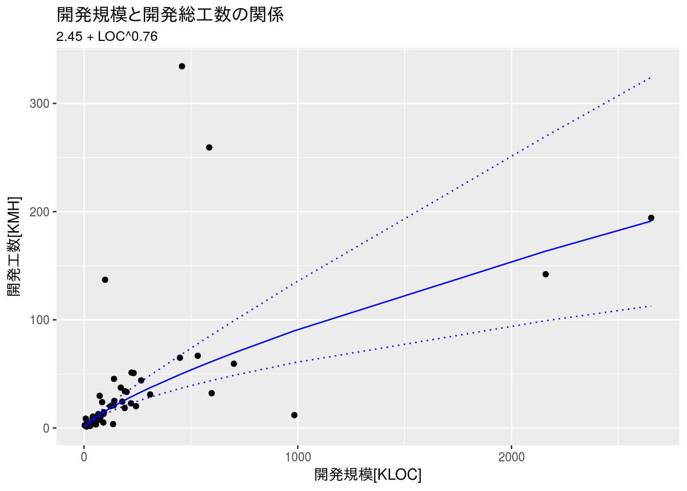
演習 5.4
以下に静的解析ツールで測定したモジュールごとの警告数のデータがあります。どのような警告内容かは、ここでは考えないことにします。 この警告数の分布を調べるために、まずはそのままのデータでヒストグラムを作成してください。 そして、次に警告数データを対数変換して、ヒストグラムを作成してください。警告数が0のデータは対数変換できないので、本文中の解説を参考にして適切に対処してください。
データの設定
本例題で利用するデータは予めCSVファイルとして保存されているものとします。
file <- "./data/ex5_4.csv"
x <- read.csv(file, header = TRUE, sep = ",", row.names = 1,
fileEncoding = "UTF-8")
x %>%
rename('警告数' = warnings) %>%
df_print(x)未変換時
#
# 階級の設定
breaks <- pretty(x[, 1], n = nclass.Sturges(x[, 1]), min.n = 1)
x %>%
ggplot(aes(x[, 1])) +
geom_histogram(breaks = breaks) +
xlab("警告数") + ylab("度数") +
ggtitle(label = "静的解析ツールの警告数分布")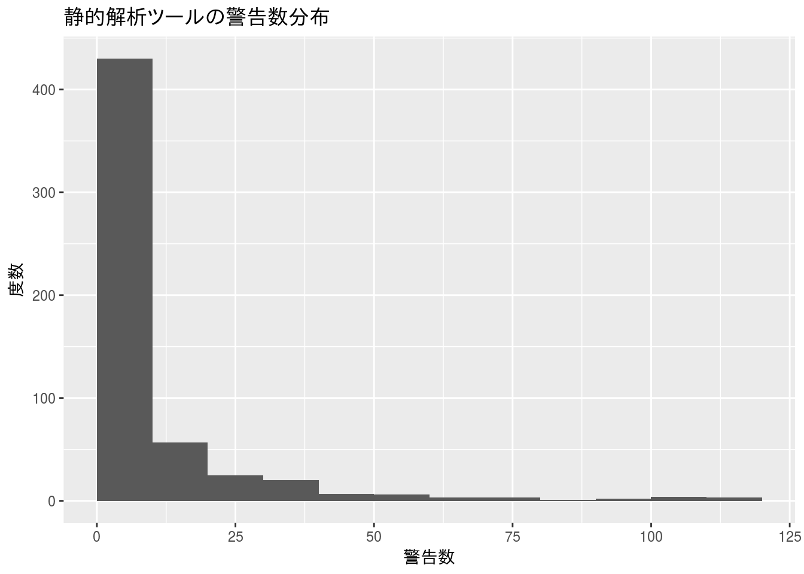
対数変換時
offset.x <- x %>%
dplyr::filter(warnings != 0) %>%
dplyr::summarise(min(warnings) / 2)
log10.x <- x %>%
dplyr::mutate(warnings = log10(x[, 1] + offset.x[, 1]))
# ヒストグラムを描く
# 階級の設定
breaks <- pretty(log10.x[, 1], n = nclass.Sturges(log10.x[, 1]), min.n = 1)
log10.x %>%
ggplot(aes(log10.x[, 1])) +
geom_histogram(breaks = breaks) +
xlab("対数変換した警告数") + ylab("度数") +
ggtitle(label = "静的解析ツールの警告数分布",
subtitle = paste("offset : ", offset.x))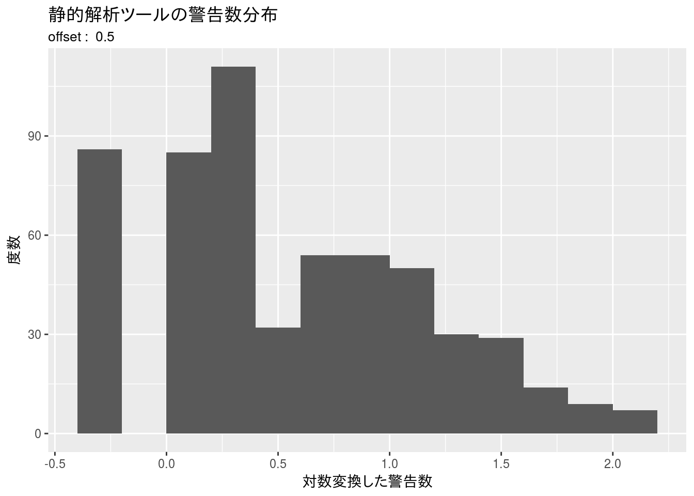
log10.x %>%
dplyr::mutate(range = cut(warnings, breaks)) %>%
dplyr::group_by(range) %>%
dplyr::summarise(freq = n()) %>%
dplyr::rename('階級' = range, '度数' = freq) %>%
df_print()逆変換後の基準値は以下の通りとなります。
log10.x %>%
dplyr::summarize(quantile(warnings, probs = c(0.9))) %>%
10 ^ . %>%
round(0) ## quantile(warnings, probs = c(0.9))
## [1,] 27別解
そもそも静的解析ツールでの警告数が0である場合は、そのモジュールには問題がないと判断して分析対象から外してしまうという考え方もありえます。
# 階級の設定
# breaks <- pretty(log10.x[, 1], n = nclass.Sturges(log10.x[, 1]), min.n = 1)
log10.x %>%
dplyr::filter(warnings > -0.3) %>%
ggplot(aes(warnings)) +
geom_histogram(breaks = breaks) +
xlab("対数変換した警告数") + ylab("度数") +
ggtitle(label = "静的解析ツールの警告数分布")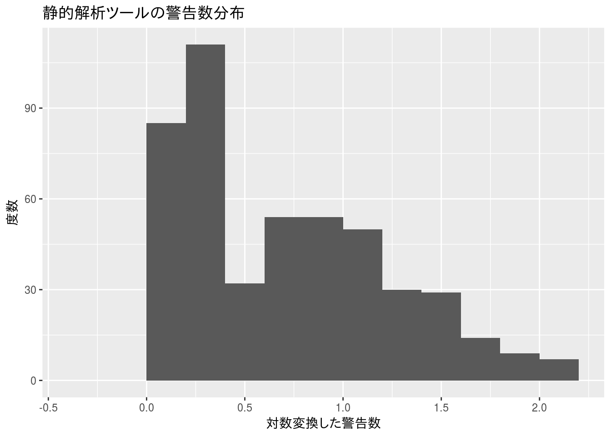
log10.x %>%
dplyr::filter(warnings > -0.3) %>%
dplyr::mutate(range = cut(warnings, breaks)) %>%
dplyr::group_by(range) %>%
dplyr::summarise(freq = n()) %>%
# t() %>% as.data.frame() %>%
dplyr::rename('階級' = range, '度数' = freq) %>%
df_print()この場合、基準値（逆変換後）は以下のようになります。
log10.x %>%
dplyr::filter(warnings > -0.3) %>%
dplyr::summarize(quantile(warnings, probs = c(0.9))) %>%
10 ^ . %>%
round(0) ## quantile(warnings, probs = c(0.9))
## [1,] 32 CC BY-NC-SA 4.0 , Sampo Suzuki [2018-04-15 21:34(JST)]
CC BY-NC-SA 4.0 , Sampo Suzuki [2018-04-15 21:34(JST)]